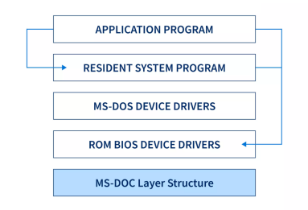
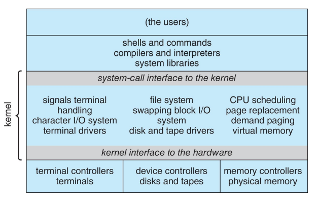
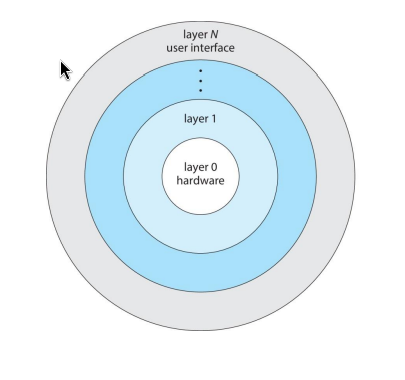
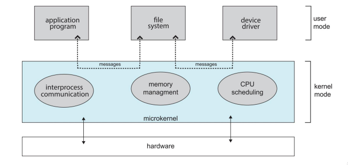
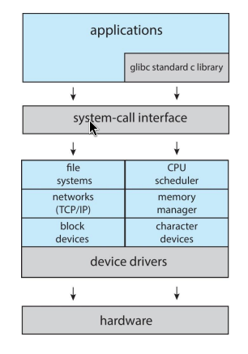
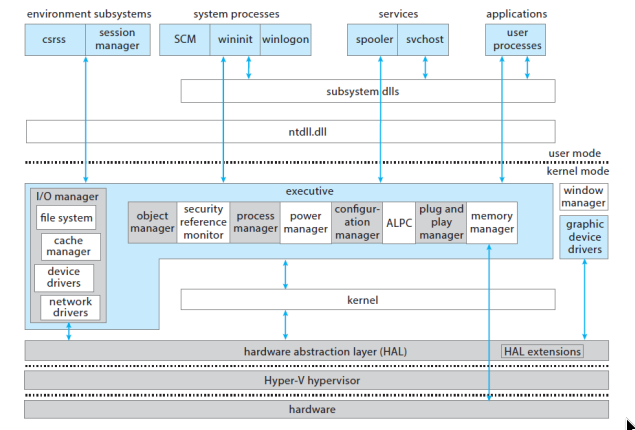
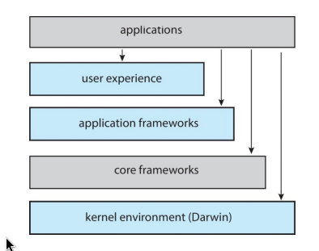
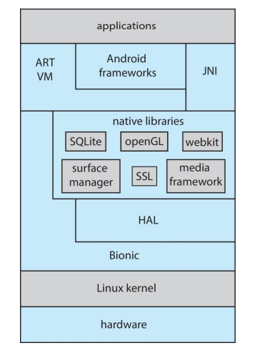

Operating System Fundamentals¶
Overview of OS¶
1. What is an Operating System?¶
[ hardware ] → (CPU, memory, devices)
⬇
[ **OS** ] → (kernel, libraries, drivers)
⬇
[ applications] → (word, web browser, etc.)
⬇
[ Users ] → (Persons, Computers, machines)
OS :- acts as a mediator between hardware and applications.
Abstraction :- to hide details of hardware from applications (e.g., file system, networking,virtual Memory, etc.)
1.1 OS goals:¶
- Simpler: Hides hardware complexity, making it easier for programmers.
- Device Independent: Makes different devices of the same type look the same to apps.
- Portable: Provides a consistent interface so apps can run on many machines/versions.
1.2 How the OS Manages Applications¶
-
- Virtual Machine Interface:
-
- Makes each program think it’s the only one running.
-
- Protection:
-
- Stops one program from interfering with another.
-
- Sharing:
-
- Lets multiple programs run at the same time and share resources.
1.3 What is part of an Operating System?¶
Windowing system (GUI) ?
- Shows windows, icons, mouse, etc.
- Sometimes part of OS (older Windows).
- Sometimes separate (Linux lets you choose).
Web browser ?
- Not part of OS.
- It’s an application running on the OS.
1.4 Popular Operating Systems Today¶
| OS | Description |
|---|---|
| Windows 10 | Common on desktops and laptops. |
| Linux | Free, open-source; used on servers, supercomputers, and Android. |
| FreeBSD | Open-source; used for servers and embedded systems. |
| Android | Most popular mobile OS; based on the Linux kernel. |
| macOS | Apple’s OS for Mac computers. |
| iOS | Apple’s OS for iPhones and iPads. |
1.5 What Operating Systems Do¶
- For Users: The OS focuses on convenience and ease of use.
- For Servers: The OS manages resources to keep many users happy.
- For Mobile Devices: The OS must save power and be easy to use.
- For Embedded Computers: The OS runs automatically without user input.
2. Operating System Definition¶
2.1 What is the Kernel,Other Programs,Middleware ?¶
kernel :-
- is the main part of the OS.
-
- It always runs and has the
highest privileges.
- It always runs and has the
-
- It connects software to hardware and manages CPU, memory, etc.
other programs :-
- System programs – come with OS, help manage things like the GUI, not part of the kernel.
-
- Application programs – like web browsers or games. They have low privileges and ask the kernel to do tasks (e.g., save files, access network).
middleware :-
- Extra software that helps developers, like tools for databases or multimedia.
3. OS Basics¶
3.1 Primitive OS vs Multitasking¶
| Topic | Description | Problems |
|---|---|---|
| Primitive OS | Just a library of services; can run one program at a time; assumes no bad users/programs. | - Poor hardware use: CPU idle while disk works. - Wastes time: Must wait for one program to finish. |
| Multitasking | Lets multiple programs run at once by quickly switching between them (context switch). | - Infinite loops: Program never releases CPU. - Memory issues: Program may access/change another’s memory. |
3.2 How Does the OS Protect Itself and Other Programs?¶
User Programs (P1) →
User Programs (P2) → User Space (limited access, safe zone)
User Programs (P3) →
User Programs (P4) →
⬇ (controlled access)
⬇
Kernel (OS Core) → Kernel Space (full privileges, direct HW access)
⬇
⬇
Hardware (CPU, Memory, Devices)
- The OS uses privileged roles to separate tasks:
-
- Kernel space – for the OS core, highest privileges, full access to hardware.
-
- User space – for user programs, limited privileges to protect the system.
- This separation stops a faulty or malicious program from:
-
- Crashing the whole system
-
- Affecting other programs
3.2.1 Kernel Space vs User Space Table¶
| Concept | Description | Purpose / Benefit |
|---|---|---|
| Kernel Space | Core of the OS, highest privileges, direct hardware access. | - Runs critical tasks - Full control over system |
| User Space | Where user applications (P1–P4) run with limited privileges. | - Prevents crashes spreading - Protects OS and programs |
| Separation | Clear boundary enforced between kernel and user programs. | - Stops faulty/malicious apps from harming system |
| Example | Programs P1–P4 run safely in user space, kernel stays isolated underneath. | - Stability & security maintained |
3.3 What is a System Call?¶
- A system call is how a program in user space asks the OS kernel to do something, like access a file or device.
- Think of it as a special request—programs can't directly access hardware.
- Unlike normal function calls, system calls transfer control to the kernel, which has high privileges.
- The kernel handles the request and then returns control to the program.
-
- Many common actions (e.g., printing text) use system calls behind the scenes.
-
- Example:
printf()uses a system call likewrite().
- Example:
3.3.1 How Does It Work?¶
-
- The program prepares arguments and uses a special instruction to trap into the kernel.
-
- This trap switches from user mode to kernel mode, allowing the OS to complete the request.
[User Program]
|
| (1) Calls function like printf()
v
[System Call Interface]
|
| (2) Trap instruction → switch to kernel mode
v
[OS Kernel]
|
| (3) Kernel exec request (e.g., write to file/device)
v
[Hardware / Device]
|
| (4) Kernel finishes, switches to user mode
v
[User Program continues]
4. Overview of Computer System Structure¶
4.1 How Are the Parts of a Computer Organized?¶
+----------------------------+
| CPU(s) |
| - Executes instructions |
| - Processes data |
+----------------------------+
|
v
+----------------------------+
| Cache |
| - Small, fast memory |
| - Reduces CPU wait time |
+----------------------------+
|
v
+----------------------------+
| Main Memory |
| - Stores programs & data |
| - Shared by CPU & devices |
+----------------------------+
^
|
-------------------------------------------------------------
| System Bus |
| - Connects CPU, memory, and device controllers |
-------------------------------------------------------------
| | |
v v v
+-------------------+ +-------------------+ +-------------------+
| Disk Controller | | Keyboard Controller| | Printer Controller|
| - Manages the disk| | - Handles keyboard | | - Handles printer |
| - Has local buffer| | - Has local buffer | | - Has local buffer|
+-------------------+ +-------------------+ +-------------------+
| | |
v v v
+-----------+ +-----------+ +-----------+
| Disk/SSD | | Keyboard | | Printer |
+-----------+ +-----------+ +-----------+
^
|
+----------------+
| DMA Controller |
| - Moves data |
| without CPU |
+----------------+
*Interrupts:* Devices can send signals to CPU via the bus
to notify events (like I/O completion)
*Timer/Clock:* Generates periodic interrupts for scheduling
and time management
-
- A computer has:
-
- One or more CPUs
-
- Main memory
-
- Device controllers (for disk, keyboard, printer, etc.)
-
All parts connect through the
system bus(shared communication line). -
Device controllersare like managers for specific devices, such as a disk, keyboard, or printer. Each one has its own local buffer to hold data. -
The
CPUandI/O devicescan work at the same time, competing for main memory.
4.2 What is an Interrupt?¶
Interrupt :-
- is a signal sent to the CPU by a device controller.
-
- It tells the CPU that an I/O operation (like a disk read) is finished.
-
- During I/O, the CPU and the device controller work in parallel.
-
The device controller handles the I/O, moving data to/from its local buffer.
-
Once the I/O operation is done, the controller sends an interrupt signal to the CPU. which says stop ,Then CPU can stop what it was doing to handle the request.
4.3 What Happens When an Interrupt Occurs?¶
- Control goes to an Interrupt Service Routine (ISR).
- ISRs are stored in the interrupt vector, which tells the OS which routine to run.
- The OS first saves the CPU state (registers + program counter) so the program can continue later.
- The OS is interrupt-driven – it reacts to events (interrupts) as they happen.
-
The OS doesn't just run in a fixed sequence. Instead, it waits for events, like a device finishing a task or a program needing service. When an event (called an interrupt) happens, the OS immediately stops what it was doing and handles that event. Afterward, it goes back to what it was doing.
4.4 What is a Trap?¶
- A trap (or exception) is a software-generated interrupt.
-
- It can be caused by:
-
An error (e.g., divide by zero)
-
A request (e.g., a system call)
5. I/O Structure¶
5.1 Types of I/O¶
| Type | How it Works | Pros/Cons |
|---|---|---|
| Synchronous | CPU waits until I/O finishes | Simple but inefficient (CPU idle) |
| Asynchronous | CPU starts I/O and continues other tasks | Efficient but more complex |
6. Storage Structure¶
6.1 Main Types of Storage¶
- Main Memory – Directly accessed by the CPU.
- Usually volatile (loses data when power is off).
- Example:
DRAM.
- Secondary Storage – Large, non-volatile storage.
- Keeps data even when power is off.
- Examples:
HDD,SSD.
6.2 Why Storage is a Hierarchy¶
- Storage is arranged by speed, cost, and volatility.
- Top: fast, expensive, small (
registers,cache). - Bottom: slower, cheaper, larger (
HDDs,magnetic tapes).
- Top: fast, expensive, small (
6.3 What is Caching?¶
- Caching means copying data from slower storage to faster storage.
- The faster storage is the cache.
- When data is needed, the system first checks the cache:
- Hit – data is found in cache (fast).
- Miss – data not in cache, so it’s copied from slower storage.
- The cache is smaller than the main storage, so the OS must decide which old data to replace with new data.
6.4 What is Cache Coherency?¶
- In multitasking or multi-CPU systems, the same data can exist in many places:
- Cache, main memory, or registers.
- The challenge is keeping all copies up to date.
- If data changes in the cache, other copies might be outdated.
- In multi-CPU systems, hardware ensures all CPUs see the latest value.
- In distributed systems, the problem is harder since many computers may hold copies.
7. How Does a Computer Start Up?¶
The computer starts up in a specific order:
- On power-on or reboot, a bootstrap program runs.
- Stored in firmware (ROM/EPROM) or in modern PCs in the SSD.
- The bootstrap initializes the system.
- Then it loads the OS kernel into
memoryand starts it.
How Does the OS Work After Start?¶
- The kernel starts system services called daemons or services in
Windows. - The OS becomes interrupt-driven:
- Handles hardware interrupts (e.g., file ready).
- Handles software interrupts (e.g., program error).
7.1 What is Direct Memory Access (DMA)?¶
- DMA is used by fast I/O devices to move data quickly.
- The device controller transfers data blocks directly between main memory and the device.
- The CPU is only interrupted once per block, not for every byte.
- This makes the system more efficient, since the CPU can do other work.
Example: Copying a file from disk to
RAMwithDMA
-
The CPU tells the DMA controller:
-
where the data should go in main memory
- how much data to transfer
-
which device (e.g., disk).
-
The DMA controller takes over and moves the data directly from the disk to RAM, without bothering the CPU for each byte.
-
When the transfer is complete, the DMA controller sends one interrupt to the CPU to say:
- "The whole block is done."
Result: The CPU is free to run other programs while the transfer happens.
7.2 Data Structures Used by the Kernel¶
| Data Structure | Description | Example / Note |
|---|---|---|
| Linked Lists | Items connected in a chain | Can be singly, doubly, or circular |
| Binary Search Trees | Fast way to find data | Like "20 questions" – each step narrows choices |
| Hash Maps | Store data with a key for quick lookup | Like a phone book |
| Bitmaps | Series of 1s and 0s showing if something is used or free | "1" = used, "0" = free |
8. Operating System Operations¶
What is Dual-mode Operation?¶
Dual-mode operation helps the OS protect itself and other system parts by having two modes: user mode and kernel mode.
- User mode:
-
- Where user programs run.
-
- Limited privileges, cannot access hardware directly.
-
- Like a passenger in a car (can use radio or window buttons).
- Kernel mode:
-
- Where the OS core runs.
-
- Full privileges, can access all hardware.
-
- Like the driver of the car (controls steering and engine).
- A mode bit shows which mode the system is in.
- To do something needing kernel privileges (like accessing a file), a program uses a system call.
- Privileged instructions can only run in kernel mode to prevent user programs from misusing hardware.
How do we guarantee that user does not explicitly set the mode bit to “kernel”?¶
-
- System call changes mode to kernel, return from call resets it to user
8.1 Resource Management by the OS¶
| Resource Area | What It Does |
|---|---|
| Process Management | Creates/deletes processes, handles synchronization and communication between them |
| Memory Management | Tracks main memory usage, allocates/deallocates memory, moves programs in/out |
| File-System Management | Manages files/directories, access control, maps files to secondary storage |
| Mass-Storage Management | Handles large storage devices (disks), manages free space, schedules disk access |
| I/O Subsystem | Hides hardware details, handles buffering, caching, and spooling |
9. Main Types of OS Structures¶




| Structure Type | Description | Example |
|---|---|---|
| Simple Structure | OS has little structure; all functions in one place; hard to manage or extend | MS-DOS |
| Monolithic Structure | Large kernel containing all OS functions (file system, CPU scheduling, memory management) | Original UNIX |
| Microkernel Structure | Non-essential parts moved to user space; kernel communicates via message passing; more reliable and secure but can be slower | Mach |
| Hybrid Systems | Combines approaches; e.g., Linux has a monolithic core plus loadable modules, Windows is mostly monolithic with some microkernel ideas | Linux, Windows |
| Layered Approach | OS divided into layers; each layer uses services of the layer below; hardware is at the bottom | – |
Hybrid Systems¶




| OS / Platform | Structure Type | Notes / Features |
|---|---|---|
| Linux & Solaris | Monolithic + Modular | - Kernel runs in kernel address space. - Uses loadable kernel modules (LKMs), so new functionality can be added without rebooting. - Example: plugging in a USB device triggers the kernel to load the required driver. |
| Windows | Mostly Monolithic with Microkernel ideas | - Has a central Executive layer in the kernel. - Separate user-mode subsystems provide different interfaces. - Combines speed of monolithic design with some microkernel features for modularity and security. |
| Apple (macOS & iOS) | Hybrid + Layered | - Kernel environment is Darwin, a hybrid of Mach microkernel and BSD Unix. - Supports kernel extensions for adding modules dynamically. - Uses layers for user experience, application frameworks, and core OS services. |
| Android | Modified Linux Kernel | - Built on a Linux kernel modified for mobile devices. - Handles process, memory, device drivers, and power management. - Uses the ART virtual machine for running Java-based apps. - Core libraries provide Android-specific services to apps. |
10. Computer System Environments¶
10.1 Types of Operating Systems¶
| OS Type | Description | Examples / Notes |
|---|---|---|
| Traditional | Stand-alone, general-purpose computers. Less common today as most systems connect to the internet | Desktop PCs |
| Virtualization | Allows one OS to run applications or other OSes inside it. Uses a Virtual Machine Manager (VMM) | Running Windows on Mac, data centers |
| Mobile | For smartphones/tablets. Optimized for limited resources, battery life, and usability. Supports extra features like GPS and gyroscope | Android, iOS |
| Client-Server | Many clients request services from a central server. The server provides resources like files or databases | Company networks, web servers |
| Peer-to-Peer (P2P) | Distributed system with no fixed client/server roles. All computers are peers | File-sharing networks, Skype |
| Cloud Computing | Services (compute, storage) delivered over a network. Uses virtual machines. Types: public cloud, private cloud; Services: SaaS, PaaS, IaaS | AWS, Google Cloud |
| Real-time Embedded Systems | Special-purpose computers with strict time constraints; tasks must complete on time | Car controllers, industrial machines |